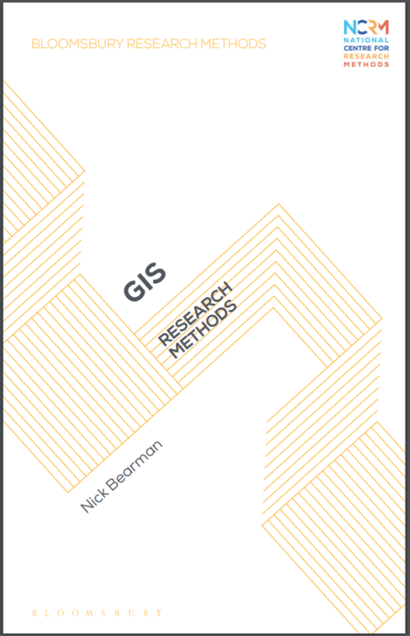
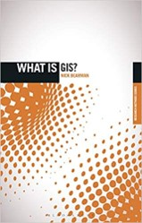

GIS: Research Methods

My book, GIS: Research Methods, is an introduction to GIS, providing a non-technical overview of the science and tools behind geographic information systems and geographic information science. It is aimed at researchers, students and academics who do not have a GIS or Geography background. The book covers the history of GIS, from John Snow’s Cholera map (1854) right up to today’s software and data and cutting-edge analysis techniques.
It goes on to cover how to find, use and evaluate the latest data sets to critiquing existing maps, highlighting limitations and common mistakes. This is the ideal book for anyone thinking about using GIS in their own research.
You can preview the first chapter here, and there is a short video about the book below.
Buying a Copy
You can order online from Bloomsbury, with a 35% discount code at the end of the video above, which should give you a total price of £14.69 for the printed book, including UK delivery.
13/05/2024: I do know Blackwells also currently offer the book for £16.55 including delivery as well, with Amazon currently offering £18.99. If you see it anywhere cheaper, let me know!
Reviews
The Journal of Geography, William Wetherholt
- “Nick Bearman provides a thorough introduction to geographic information systems (GIS) for students, researchers, and scholars outside of the geographic discipline.”
- “Some cartographic fundamentals are given quick attention to help social scientists understand what makes a good map, which is a welcome inclusion that can be overlooked in GIS texts.”
- “Anyone with some experience using GIS can sympathize with the sometimes overwhelming variety of files encountered. This text takes time to break down the infrastructure of shapefiles (e.g., .shp, .shx, .dbf, and .prj) as well as other file types to reduce bewilderment for newcomers.”
William A. Wetherholt (2021) GIS: Research Methods, Journal of Geography, 120:5, 191, DOI: 10.1080/00221341.2021.1951818
Gavin Schrock, GoGeomatics
- “If you have ever had the good fortune of attending one of Dr. Bearman’s online classes, or watched any of his instructional videos, his engaging teaching style translates well in this book.”
- “At this point in time, and with the advent of GIS-for-all, if I was to recommend a book, for the beginner/intermediate user seeking to learn more about how GIS can be used in research (from academic to simple project level), GIS Research Methods” by Dr. Nick Bearman, would be it.”
- “While his examples are from social sciences, it is not hard for any end user to see where different methods could be used for their own applications.”
Gavin Schrock (2021) Book Review: GIS Research Methods, GoGeomtics, https://gogeomatics.ca/book-gis-research-methods/
What is GIS?
You might see references to a book called ‘What is GIS?’, this is in fact, the same book as GIS: Research Methods. The content is identical! Originally, the title was ‘What is GIS?’, it was a part of Bloomsburys’ ‘What is…?’ series and I rather liked the title. However, just as I had finished writing the book, Bloomsbury decided to rebrand the series, and so now it is GIS: Research Methods.
